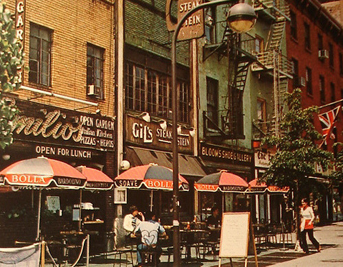

Bushwick, Brooklyn, 1982
Bushwick, Brooklyn, 1982

34th Street, 1981
This is a whole day of TV in NYC in 1977. We thought we had it pretty good.
I love the little movie reviews they wrote up.
Brighton Beach Bath & Racquet Club, 1980s


No Parking (Williamsburg, Brooklyn), Photo by Frank Espada, 1974

King Kong hangin’ out on the Empire State Building, 1983
Walking down 5th Avenue in style, 1972

The Garden of Eden, 1976. Forsyth Street, Lower East Side

30k followers! Thanks, people!

Bloom’s Shoe Gallery
Hmmm, doesn’t ring a bell. Anyone else remember this?

Cobble Hill Brooklyn, 1970

Walkin’ in the rain. 6th St and 2nd Ave, 1972

Lookout.

Columbus and 75th, 1981

Rollerskating in Central Park, 1982
34th and 7th, 1969

Irwin Klein New York City c.1969

A lonely business man. Park Ave and 48th Street, 1980